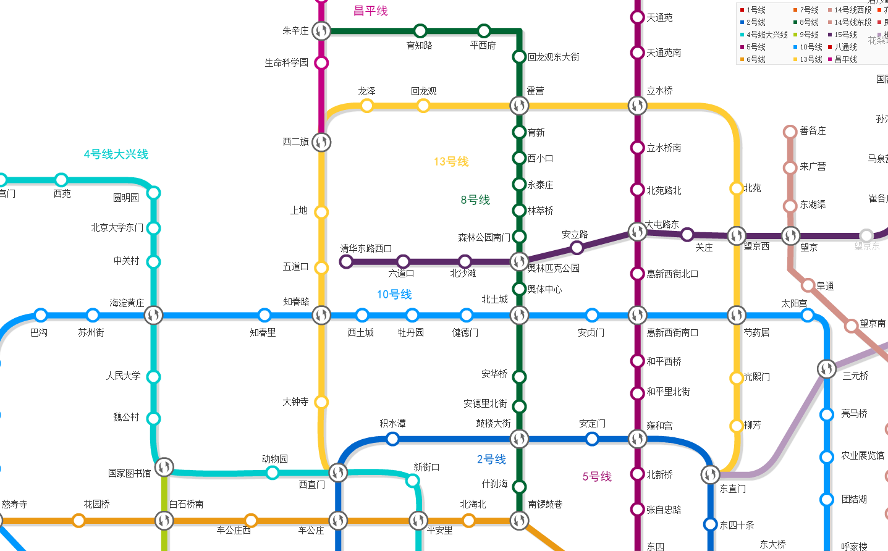
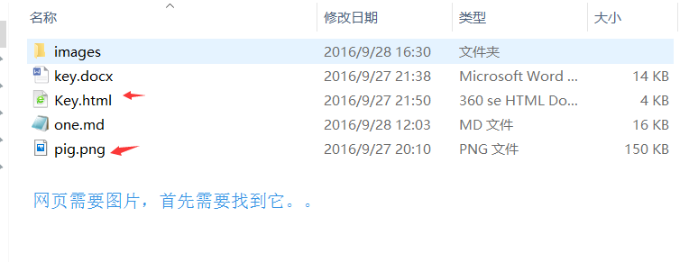

1.4-相对路径
路径(重点、难点)


实际工作中，通常新建一个文件夹专门用于存放图像文件，这时再插入图像，就需要采用“路径”的方式来指定图像文件的位置。
路径可以分为： 相对路径和绝对路径
相对路径
- 图像文件和HTML文件位于同一文件夹：只需输入图像文件的名称即可，如<img src="logo.gif" />。
- 图像文件位于HTML文件的下一级文件夹：输入文件夹名和文件名，之间用“/”隔开，如<img src="img/img01/logo.gif" />。
- 图像文件位于HTML文件的上一级文件夹：在文件名之前加入“../” ，如果是上两级，则需要使用 “../ ../”，以此类推，如<img src="../logo.gif" />。
绝对路径
绝对路径
“D:\web\img\logo.gif”，或完整的网络地址，例如“http://www.itcast.cn/images/logo.gif”。